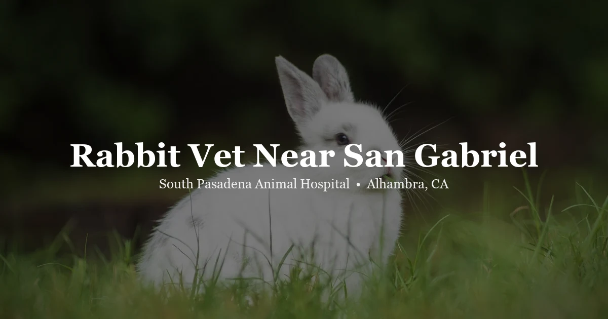

April 30, 2026 · 7 min read
Rabbit Vet Near San Gabriel: What Bunny Owners in the SGV Need to Know

Finding a rabbit vet near San Gabriel is considerably harder than finding a vet for a dog or cat. The San Gabriel Valley has no shortage of veterinary clinics — but most of them focus entirely on dogs and cats, and rabbits are genuinely different animals with their own physiology, their own common diseases, and their own requirements for safe veterinary care. Dropping a rabbit into a dog-and-cat practice is not the same as finding care designed for them.
South Pasadena Animal Hospital is located at 3116 W Main St in Alhambra. From central San Gabriel — the Valley Boulevard corridor, the Del Mar area, or the Rosemead Boulevard corridor — the drive is typically 5 minutes. We see rabbits for wellness exams, dental disease, GI stasis, spay and neuter, and other health concerns. Our rabbit vet page has more details on what we offer.
If you're a new rabbit owner, or if your rabbit has never seen a vet who actually sees a lot of rabbits, this post is for you.
Why rabbits need a vet who sees them regularly
Rabbits are not small dogs or cats. Their physiology is different in ways that matter clinically:
GI motility. Rabbits have a highly specialized digestive system that requires near-constant movement. Unlike dogs, rabbits cannot vomit — if something goes wrong in the GI tract, the only direction things can go is toward stasis (a complete slowdown or stop). GI stasis is one of the leading causes of death in pet rabbits, and it can develop and become fatal within 24–48 hours. A vet who sees many rabbits will recognize the early signs and know how to treat it.
Dental anatomy. Rabbit teeth grow continuously throughout their lives. In the wild, this is managed by chewing grass and hay for hours each day. In pet rabbits — especially those fed primarily pellets — dental malocclusion develops when teeth are not worn down evenly. The molar teeth in the back of the mouth can develop sharp spurs that lacerate the tongue and cheeks, making eating painful or impossible. This is the leading cause of weight loss and death in pet rabbits, and it is invisible to the untrained eye because the back molars cannot be seen without equipment.
Medication safety. Some antibiotics commonly used in dogs and cats — including penicillin and amoxicillin — are dangerous or fatal to rabbits because they disrupt the gut flora that rabbits depend on for digestion. A vet who does not routinely treat rabbits may not be aware of these contraindications. Getting the right antibiotic class is not optional; it is life or death.
Anesthesia. Rabbits are considered higher-anesthetic-risk animals than dogs and cats. They have a higher rate of respiratory complications under general anesthesia, and they require specific pre-anesthetic preparation — including fasting protocols that differ from dogs and cats (rabbits should not be fasted for extended periods before anesthesia). Appropriate monitoring and supportive care during rabbit procedures requires familiarity with these differences.
Rabbit conditions we treat
GI stasis. When the gut slows or stops, rabbits stop eating, stop producing fecal pellets, and rapidly become painful and depressed. Treatment involves fluid therapy, pain management, gut motility stimulants, and addressing the underlying cause (which is often stress, dehydration, or inadequate hay intake). GI stasis that is caught early is highly treatable; GI stasis that has been present for 24+ hours becomes increasingly difficult to reverse.
Dental disease. Dental malocclusion — particularly molar spurs — is the number one cause of chronic illness and death in pet rabbits. Rabbits with molar spurs lose weight because eating is painful, drool excessively, and may drop food from their mouth (called "quidding"). Diagnosis requires sedation or anesthesia so the back of the mouth can be examined properly. Treatment involves floating (filing) the teeth, which may need to be repeated periodically as the teeth continue to grow.
Respiratory infections. "Snuffles" — nasal discharge, sneezing, and labored breathing — is a common presenting complaint in rabbits. It is usually caused by Pasteurella multocida, though other bacteria can be involved. Respiratory infections can be managed but often cannot be fully eliminated, requiring monitoring and periodic antibiotic courses.
Head tilt / E. cuniculi. Encephalitozoon cuniculi is a microsporidian parasite that can cause neurological signs in rabbits, including sudden head tilt, rolling, loss of balance, and nystagmus (rapid involuntary eye movement). It is treatable with fenbendazole, but the earlier treatment is started, the better the outcome.
Uterine cancer in unspayed females. This is one of the most preventable serious conditions in pet rabbits. Unspayed female rabbits have a dramatically elevated risk of developing uterine adenocarcinoma. Research indicates that up to 80% of intact females over four years of age will develop this cancer. Early spay — typically between 4 and 6 months — eliminates this risk entirely.
Sore hocks (pododermatitis). Rabbits kept on wire-bottomed cages or hard surfaces can develop painful ulcerations on the bottom of their hind feet. Treatment involves wound care, appropriate bedding, and antibiotics if infection is present.
Ear mites. Ear mites in rabbits cause intense itching and thick dark crusting inside the ears. They are treatable with appropriate antiparasitic medications.
Rabbit spay and neuter — why it matters and when to do it
Spaying female rabbits is one of the most impactful health decisions a rabbit owner can make. The risk of uterine adenocarcinoma in unspayed females is among the highest cancer rates of any pet species — some studies put the risk at 50–80% by age four. This is not a theoretical risk. It is a predictable outcome that can be entirely prevented by spaying before the first reproductive cycle.
The ideal window for spaying a female rabbit is between 4 and 6 months of age. By this point, the reproductive system is developed enough to handle the surgery safely, but the risk of uterine changes has not yet accumulated significantly. Spaying older rabbits is still worthwhile but carries higher anesthetic risk and, if uterine disease is already present, becomes a more complex procedure.
Male rabbits (bucks) benefit from neutering as well. Unneutered males can be territorial and aggressive, and they may spray urine. Neutering significantly reduces these behaviors and is usually performed between 3 and 5 months of age when the testicles have descended.
Rabbit anesthesia is not the same as dog or cat anesthesia. We take specific precautions for rabbit surgical procedures, including appropriate monitoring and supportive warming, because rabbits are more sensitive to the effects of general anesthesia.
Our pricing page lists current costs for rabbit spay and neuter. You can also call (626) 441-1314 to ask questions before booking.
What to feed your rabbit
Diet is medicine for rabbits. The single most important food a rabbit can eat is unlimited grass hay — timothy, orchard grass, or meadow hay. Hay should make up approximately 80% of the diet, with fresh leafy greens (romaine, cilantro, parsley, leafy herbs — not iceberg lettuce) making up most of the rest.
Pellets are often overemphasized. They are calorie-dense and low in fiber relative to hay. A diet heavy in pellets does not provide the long-fiber hay that is essential for both dental wear and gut motility. Many rabbits develop both dental disease and GI problems because they eat primarily pellets and not enough hay.
Foods to avoid include: high-sugar fruits (occasional small amounts are fine), starchy vegetables like corn and potatoes, iceberg lettuce (nutritionally empty and mildly problematic), and any processed human food. Sudden changes in diet can disrupt gut flora and trigger GI stasis — any dietary changes should be made gradually over 7–10 days.
Signs your rabbit needs to see the vet
The following signs are not "wait and see" situations. If your rabbit shows any of these, contact a vet the same day:
- Not eating for 6 or more hours — this is the most important sign of GI stasis and should be treated as an emergency
- No fecal droppings, or significantly reduced droppings — normal rabbits produce dozens of pellets daily; absence is alarming
- Teeth grinding (bruxism) — indicates pain, often from GI stasis or dental disease
- Sudden head tilt, loss of balance, or rolling — may indicate E. cuniculi or inner ear infection
- Labored or noisy breathing — respiratory infections can progress quickly
- Lethargy or unresponsiveness — a rabbit that is not moving or interacting is seriously ill
- Drooling or wet chin — often indicates dental disease affecting the ability to swallow
- Sudden weight loss — weight loss in rabbits is almost always a sign of underlying disease
Rabbits can deteriorate very quickly. If you're uncertain whether what you're seeing is serious, call us at (626) 441-1314 and describe the symptoms — we can help you determine urgency.
Getting to us from San Gabriel
From San Gabriel, the most direct route to SPAH is via Valley Boulevard westbound. Valley Blvd connects directly to the Alhambra area, and from there it is a short distance to Main Street. We are at 3116 W Main St, Alhambra, CA 91801 — parking is available directly in front of the clinic.
The drive from the Valley/Del Mar area in San Gabriel is typically 5 minutes. From the Rosemead Blvd corridor in San Gabriel, allow approximately 7–8 minutes depending on traffic.
You can book a rabbit wellness or sick visit through our rabbit vet page, through our contact page, or by calling (626) 441-1314. We recommend calling if your rabbit is showing urgent signs rather than waiting for an online booking response.
For information on our fees, visit our pricing page — we publish our pricing online so there are no surprises.
Questions we hear often about rabbit vet care
Can a regular dog-and-cat vet see my rabbit?
Some general practice vets will see rabbits, but rabbit physiology is genuinely different — different GI motility, dental anatomy, anesthesia protocols, and medications. Certain antibiotics safe for dogs and cats are toxic to rabbits. A vet who sees rabbits regularly is better positioned to recognize early disease, interpret rabbit-specific findings, and prescribe appropriate treatments.
How often should my rabbit see a vet?
Annual wellness exams for healthy adult rabbits; every 6 months for rabbits over five. Rabbits hide illness extremely well — regular wellness visits are how dental disease, weight changes, and other conditions get caught before they become emergencies.
What are the signs of GI stasis in a rabbit?
Not eating for more than a few hours, little or no fecal output, smaller or misshapen droppings, hunched posture, teeth grinding (indicating pain), and a bloated or hard abdomen. GI stasis is a medical emergency — if your rabbit has not eaten or produced droppings for 6 or more hours, call a vet immediately.
When should I spay or neuter my rabbit?
Female rabbits should ideally be spayed between 4 and 6 months to prevent uterine adenocarcinoma — a cancer that affects up to 80% of unspayed females by age four. Males can be neutered from about 3–5 months. Rabbit anesthesia requires specific protocols; we use appropriate monitoring for all rabbit surgical procedures. Contact us or see our pricing page for more information.